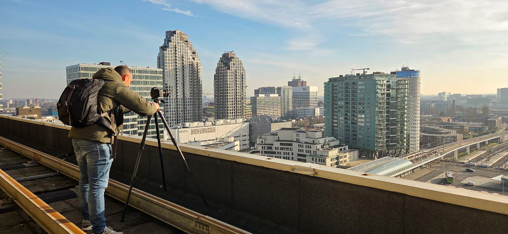

Koen Meershoek is fotograaf uit Den Haag met een bijzondere weg naar zijn vak. Fotografie begon als passie, maar het was zijn werk als filmmaker bij 3MP film & fotografie dat die passie opnieuw aanwakkerde.
Als mede-eigenaar van 3MP werkt hij nauw samen met Paul Scholte en Maarten van Nierop — beiden opgeleid als architect aan de TU Delft — en het is die samenwerking die zijn blik op de gebouwde omgeving heeft gevormd. Door hun ogen leerde hij kijken naar ruimte, licht en structuur, en raakte hij gefascineerd door architectuur als onderwerp.
Die fascinatie is nu de rode draad in zijn fotografisch werk.